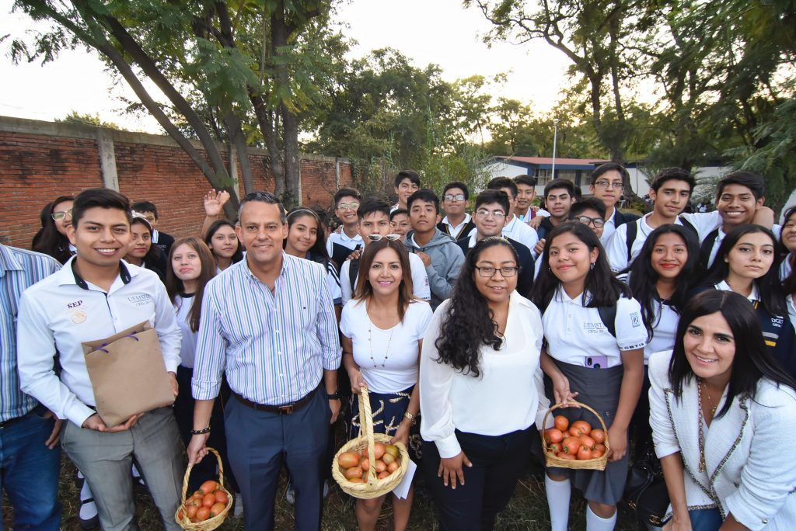
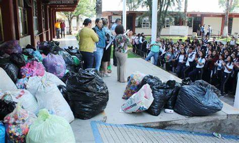
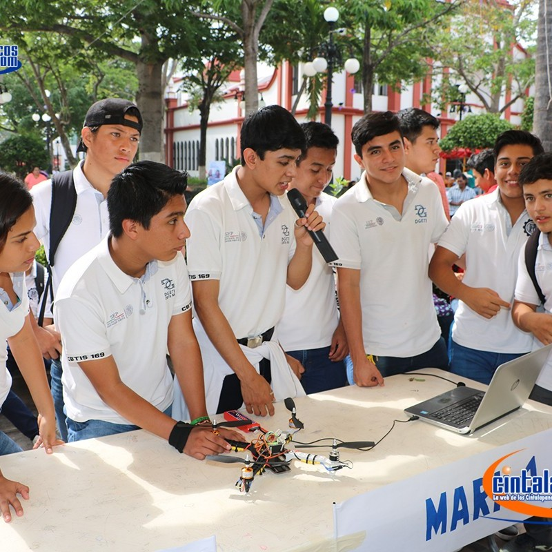

CENTRO DE BACHILLERTO TECNOLÓGICO INDUSTRIAL
Y DE SERVICIOS NUMERO 243.
CENTRO DE BACHILLERTO TECNOLÓGICO INDUSTRIAL
Y DE SERVICIOS NUMERO 243.
Formar personas con conocimientos tecnológicos en las áreas industriales, comerciales y de servicios, a través de la preparación de bachilleres y profesioneles técnicos con el fin de contribuir al desaarrollo sustentable del país.
Ser una institusión de Educasión Media Superior, certificada, orientada al aprendizajey el desarrollo de conocimientos tecnológicos y humaniticos.
ocultar img
mostrar img
La idea de crear y gestionar hortalizas orgánicas se originó sobre la conscientización de usp excesivo de químicos en hortalízas, mediate grupos de alumnos que esperimentan y demuestran como se puede producir el mismo producto usando abonos orgánicos, ésto es una práctica que va de la mano con el medio ambiente, además sirve como integración y regularización en aquellos alumnos de regazo escolar.
ocultar img
mostrar img
En nuestro país cada vez generamos más basura sin darnos cuenta que muchos de los materiales podemos utilizarlos nuevamente para un uso común en nuestro entorno. Con éstos proyectos se pretende que el alumno y el docente se den cuenta sobre las diferentes manualidades u objetos que se pueden hacer y que la utilizamos en la vida diaria, mediante equipos de trabajo cada uno presenta diferentes propuestas que se pueden hacer con materiales reciclados.
ocultar img
mostrar img
Un proyecto tecnológico es una secuencia de tareas o actividades relacionadas entre si, que tiene como objetivo la creación de un producto o servicio que brinde una solución, para que lo que se diseñe sea efectivo. Debe resoñver el problema mejor que otra propuesta con la misma función. El resultado final es un modelo o prototipo a escala. Se debe tener presente que, cuando hablamos de tecnologías no nos referimos a las nuevas si no a las más apropiadas.
Mtro. Esdras Mejía Ramírez
Directorio de coordinación de proyectos
Mtro. Jhony Jordan Roblero Galindo
Presidente de ALIDET
Mtro. Maugro Joseim Gómez Roblero
Evaluador 1 de proyectos locales
Mtra. Ingrid V. Ordaz Paxtor
Evaluador 2 de proyectos locales
Mtro. Luis Dvid Farrera Ruíz
Coordinador de proyectos locales
proyectos locales:
calle central poniente s/n barrio San Francisco c.p. 30900 (teléfono y fax: 962-64-10262)
e-mail institusional:cbtis.243@uemstis.sems.gob.mx